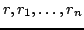

Usage
diagonal []
diagonal(r, n)
diagonal? A
scalar? A
square? A
Signatures
diagonal: Vector R %
diagonal: (R, MachineInteger) diagonal?,scalar?,square?: %
| Parameter | Type | Description |
|---|---|---|
|  | R | Entries |
| n | MachineInteger | A size |
| A | % | A matrix |
Description
diagonal([
See Also
companion,one?